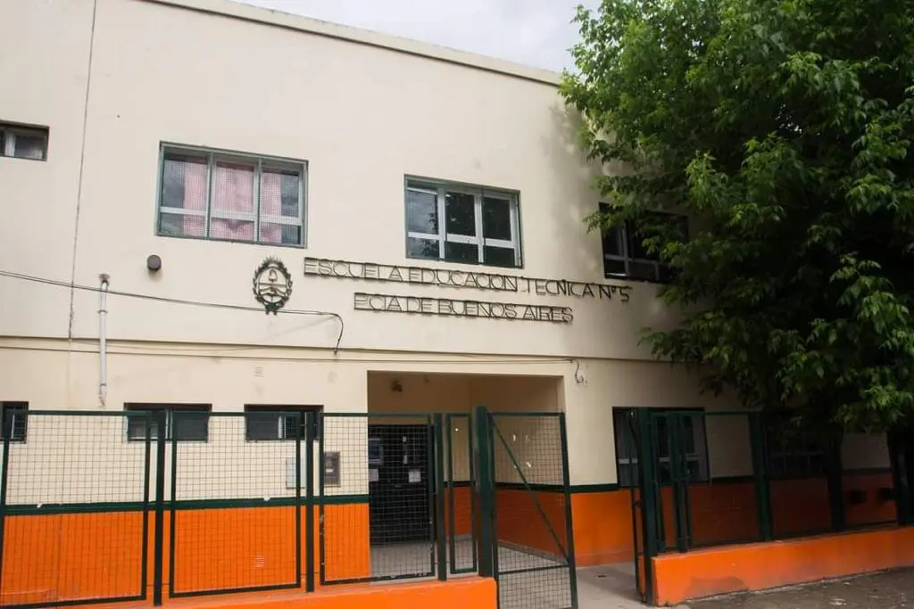

La Escuela de Educación Secundaria Técnica N°5, fundada en 1991, se ha consolidado como un pilar fundamental en la formación de jóvenes talentos en nuestra comunidad. Nos dedicamos a brindar una educación técnica de vanguardia, con un fuerte compromiso con la excelencia académica y el desarrollo integral de nuestros estudiantes.
Nuestra misión es preparar a los futuros profesionales para los desafíos del mundo moderno, combinando una sólida base teórica con una intensa práctica en talleres y laboratorios equipados con tecnología de punta. Creemos firmemente en el poder de la educación para transformar vidas y construir un futuro próspero.
Con especialidades en Informática, Programación y Maestro Mayor de Obras, ofrecemos las "Tecnología y Habilidades para el Futuro" que el mercado laboral demanda, fomentando la innovación, el pensamiento crítico y el trabajo en equipo.